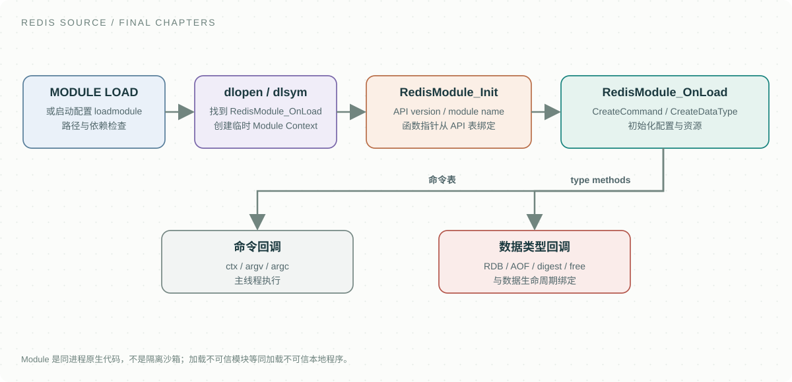
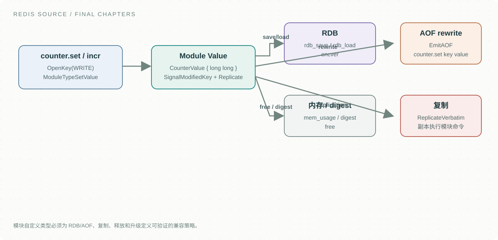
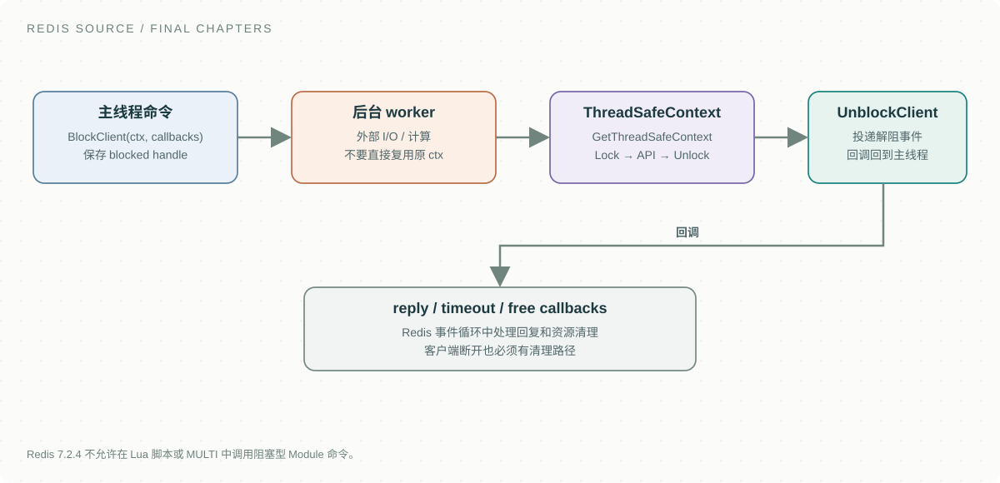

Chapter 27 / Redis Source Anatomy
Redis Module 开发：命令 API、自定义类型与阻塞客户端
从 moduleLoad、RedisModule_Init 和 API 表出发，完成自定义命令、RDB/AOF 类型回调、复制、WATCH 通知和 worker thread 解阻流程；配套可编译的计数器模块。
Module 是进程内扩展，不是沙箱或远程插件
Redis Module 从 Redis 4.0 引入，提供 C API 让动态链接库注册命令、扩展数据类型、订阅事件并参与持久化。它适合需要原生性能、复杂数据结构和 Redis 生命周期集成的场景；但必须先理解安全边界：模块通过 dlopen() 加载进 Redis 进程，拥有与服务端相同的地址空间和操作系统权限。模块崩溃、越界写或死锁都可能影响整个 Redis 实例。
本章以 Redis 7.2.4 的 module.c 和 redismodule.h 为实现基准。模块并不是在另一个隔离进程中运行的 RPC 服务；API 的抽象减少了模块对 Redis 内部结构的直接依赖，但不提供操作系统级安全隔离。生产环境只应加载来源可信、版本匹配、经过审计的模块。

RedisModule_Init：从 API 表取得函数指针
启动时，moduleLoad() 调用 dlopen(path, RTLD_NOW|RTLD_LOCAL)，再用 dlsym() 找到模块导出的 RedisModule_OnLoad。Redis 创建临时上下文并调用 OnLoad；模块必须首先调用 RedisModule_Init(ctx, name, version, REDISMODULE_APIVER_1)。这个初始化函数从传入的 API 表取得 RedisModule_GetApi，再将 RedisModule_CreateCommand、RedisModule_OpenKey 等 API 函数指针逐一绑定。
因此模块通常直接包含随 Redis 发布的 redismodule.h，编译为共享库，而不是链接到一个固定的 Redis 内部私有 ABI。API version 和各数据类型方法版本用于控制兼容边界；它们不意味着任意 Redis 版本、任意 CPU 架构和任意依赖库都能无条件二进制兼容。
#include "redismodule.h"
int RedisModule_OnLoad(RedisModuleCtx *ctx,
RedisModuleString **argv, int argc) {
REDISMODULE_NOT_USED(argv);
REDISMODULE_NOT_USED(argc);
if (RedisModule_Init(ctx, "mymodule", 1,
REDISMODULE_APIVER_1) == REDISMODULE_ERR)
return REDISMODULE_ERR;
return RedisModule_CreateCommand(
ctx, "mycommand.ping", MyCommand_Ping,
"readonly", 0, 0, 0
);
}模块加载方式可以是启动配置中的 loadmodule /path/to/module.so，也可以在运行时由管理员执行 MODULE LOAD。模块的 OnLoad 负责注册类型和命令；如果加载失败，Redis 会撤销已创建的模块结构并关闭动态库句柄。
自定义命令：参数、Key 位置、ACL 与回复都要定义清楚
命令回调类型为 int (*RedisModuleCmdFunc)(RedisModuleCtx *ctx, RedisModuleString **argv, int argc)。数组 argv[0] 是命令名，后续元素是参数。RedisModule_CreateCommand() 的 flags 声明命令是 write、readonly、deny-oom 等；firstkey/lastkey/keystep 描述简单的 key 参数位置，帮助 Redis 进行 Cluster slot、ACL 和命令分析。对复杂参数布局，应使用更完整的 command info / key spec API，而不是错误地把每个参数都当成 key。
命令回调通过 RedisModule_ReplyWithLongLong()、ReplyWithString()、ReplyWithError() 等 API 构造 RESP 回复。用 RedisModule_OpenKey() 打开 key 时，必须声明 READ 或 WRITE 权限，并在适当位置关闭 key。RedisModule_AutoMemory(ctx) 可以自动清理附着在当前上下文的 API 对象；若字符串需要跨回调生命周期保留，应使用 RedisModule_RetainString()，不能保存一个马上会被释放的 argv 指针。
| API | 作用 | 关键约束 |
|---|---|---|
| RedisModule_CreateCommand | 注册命令与命令 flags | Key 位置、读写语义和 ACL 必须准确 |
| RedisModule_OpenKey | 打开 key | READ/WRITE 模式与 CloseKey 配对 |
| RedisModule_AutoMemory | 自动释放上下文对象 | 跨回调保存时需 RetainString 或复制 |
| RedisModule_ReplyWith* | 构造 RESP 回复 | 遵守回调生命周期和回复顺序 |
| RedisModule_SignalModifiedKey | 通知 key 已修改 | WATCH/相关通知必须正确失效 |
| RedisModule_ReplicateVerbatim | 复制原始模块命令 | 命令需确定性地重建相同状态 |
自定义数据类型：类型回调就是持久化与内存契约
自定义数据类型必须在 RedisModule_OnLoad() 中调用 RedisModule_CreateDataType() 注册。Redis 7.2.4 的模块类型名需要 9 个字符，调用返回 RedisModuleType *，而不是旧稿中所写的 RedisModuleTypeID *。类型方法结构 RedisModuleTypeMethods 带有版本号；基本回调包括 RDB load/save、AOF rewrite、memory usage、digest 和 free，后续方法版本还可提供 unlink、copy、defrag 等能力。

RDB 回调负责把自定义对象写入/从 RDB 恢复；AOF rewrite 回调必须输出可重放的 Redis 命令；free 回调释放对象内存；digest 回调参与一致性摘要。升级编码格式时要递增 encoding version，并让旧版本读取路径明确处理兼容或拒绝。仅仅实现一个 C struct 和 GET/SET 命令，并不能算完成一个 Redis 原生数据类型。
下面的计数器模块提供 counter.set、counter.incr、counter.get，并实现 RDB/AOF 回调。模块写入 key 后调用 RedisModule_SignalModifiedKey() 触发 WATCH 失效，并用 RedisModule_ReplicateVerbatim() 传播可确定重放的原始命令。
# Build against the pinned Redis 7.2.4 header
cc -std=c11 -O2 -fPIC -shared \
-I /path/to/redis-7.2.4/src \
-o countermod.so counter_module.c
# Start an isolated server with the module loaded
redis-server --port 6390 --bind 127.0.0.1 \
--loadmodule ./countermod.so --save "" --appendonly no
redis-cli -p 6390 COUNTER.SET inventory 41
redis-cli -p 6390 COUNTER.INCR inventory 1
redis-cli -p 6390 COUNTER.GET inventory
redis-cli -p 6390 SAVE仓库中的 完整 counter_module.c、Makefile 和 集成测试 会在 CI 中用 Redis 7.2.4 真正编译模块，验证命令注册、RDB 保存/加载和 AOF rewrite 重建，而不是把示例代码只作为未运行的伪代码。
模块写命令的复制与 AOF 重写必须可重放
普通 Redis 命令由服务器掌握其写入效果；模块自定义命令则需要明确告诉 Redis 如何传播修改。若命令本身确定性且在副本端可以重放，RedisModule_ReplicateVerbatim(ctx) 可以传播本次客户端调用；若模块的计算结果依赖外部状态或随机数，更安全的方式通常是使用 RedisModule_Replicate() 传播已经确定的结果命令。
AOF rewrite 的 aof_rewrite 回调不是把模块 C 代码序列化进 AOF，而是输出一条或多条可重放命令，重建该 key 当前的逻辑状态。示例计数器将任意历史增量折叠成一次 counter.set key current-value。RDB 则通过 Save/Load 方法写入专用二进制表示。两条路径必须共同覆盖模块类型的恢复语义。
模块命令的复制与 WATCH/keyspace 事件也要保持一致。RedisModule_ModuleTypeSetValue() 在内部使用特殊 key 写入路径；模块应显式调用 RedisModule_SignalModifiedKey() 使被监视 key 的乐观锁状态失效。模块的数据修改、复制、通知和持久化是四个相互关联但不等同的责任。
BlockClient：工作线程不能随意拿着 RedisModuleCtx 操作
模块命令默认在 Redis 命令执行线程中运行。若回调直接进行慢速网络请求、等待外部服务或执行长计算，就会占用 Redis 主执行路径。Module API 提供 RedisModule_BlockClient()：先保存 blocked-client handle，再把耗时工作交给模块管理的 worker，工作完成后调用 RedisModule_UnblockClient()。

worker 不能直接复用原命令回调的 RedisModuleCtx。如果后台线程确实需要调用 Redis API，应使用 RedisModule_GetThreadSafeContext() 创建线程安全上下文，在 ThreadSafeContextLock() 与 ThreadSafeContextUnlock() 之间调用允许的 API。解除阻塞后，reply/timeout/free 等回调由 Redis 的事件处理路径调用，模块必须正确处理超时、客户端断开、线程取消和资源释放。
Redis 7.2.4 的 moduleBlockClient() 明确拒绝在 Lua 脚本或 MULTI 事务上下文中启动阻塞型模块命令；这类上下文不能安全地等待一个异步模块回复。后台线程也必须在模块卸载前完成或取消，不能让动态库卸载后仍有线程执行模块代码。
模块上线清单：ABI、内存、线程、持久化与信任边界
上线模块前至少检查：目标 Redis 版本与 API version；模块 .so 的架构、动态依赖和编译器 ABI；命令 flags 与 key spec；所有 RedisModuleString/Key/CallReply 的生命周期；自定义类型的 RDB/AOF 兼容性；复制重放确定性；后台线程与 blocked-client 的退出清理；ACL/通知/WATCH 行为；模块升级和卸载计划。
| 风险 | 必须验证 | 常见故障 |
|---|---|---|
| 进程安全 | 边界检查、错误路径、fuzz 与 sanitizer | 模块崩溃拖垮整个 Redis 进程 |
| 内存生命周期 | AutoMemory / RetainString / Free / CloseKey | 悬空指针、泄漏、double free |
| 持久化 | RDB load/save 与 AOF rewrite 双路径 | 重启后 module key 丢失或格式不兼容 |
| 复制 | 确定性重放、模块版本一致 | 副本状态与主节点不一致 |
| 线程 | ThreadSafeContext、锁、超时和卸载 | 数据竞争、死锁、卸载后线程执行 |
| 权限 | 来源可信、MODULE LOAD 权限和部署审批 | 任意原生代码获得服务端进程权限 |
Redis 8 将多项 Stack 能力纳入发行包，但这不意味着模块机制消失。Redis 8.10.3 源码树仍包含模块清单和外部模块源码目录，发行包会把这些模块作为配套组件构建并在运行时加载。下一章会区分“Redis 8 发行包整合”与“模块变成核心内建命令”这两个概念。
源码与可运行实验
源码阅读顺序：moduleLoad() → RM_CreateCommand() → RM_CreateDataType() → RM_ModuleTypeSetValue() → RM_Replicate()/RM_ReplicateVerbatim() → blocked-client 和 thread-safe context 实现。Redis 官方的 Modules API 与 native types 文档适合核对公开 API 契约；源码适合核对 7.2.4 的具体执行路径。
CI 运行的模块实验覆盖自定义类型 RDB/AOF 恢复，但并未在生产环境测试线程崩溃、并发卸载或不可信模块。不要把测试模块直接部署到生产 Redis。
源码与参考
正文中的实现事实均标明版本。官方文档用于核对公开语义，固定版本源码用于核对具体实现。
- Redis 7.2.4 module.c：moduleLoad、CreateCommand、CreateDataType、BlockClient
- Redis 7.2.4 redismodule.h：公开 Module API 和版本化 type methods
- Redis 官方 datatype 模块测试：RDB load/save 和自定义类型
- Redis 官方 blockedclient 模块测试：worker 与 thread-safe context
- Redis 官方 Modules API reference
- Redis 官方 Modules native types：RDB/AOF 回调与类型生命周期